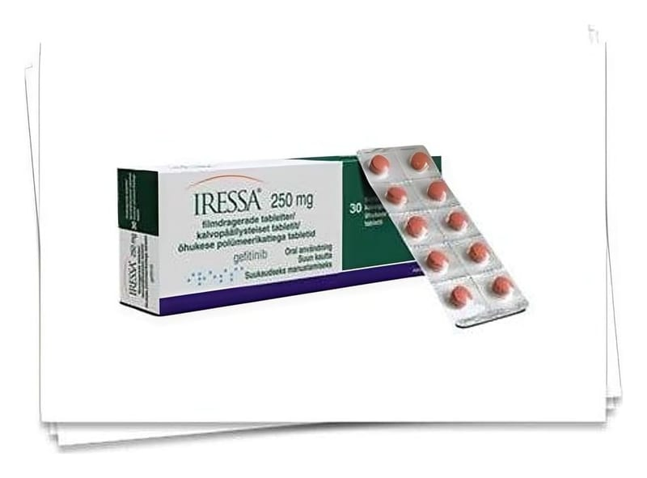

İressa 250 mg Film Kaplı Tablet, 30 Adet

Ne için kullanılır
KT · Bölüm 1• IRESSA kahverengi, yuvarlak, bir yüzünde “IRESSA 250” baskısı olan, diğer yüzü düz bir tablettir.
IRESSA 30 tabletlik blister ambalajlarda sunulmaktadır. Blister folyosu perfore veya düz olabilir.
• IRESSA ‘epidermal büyüme faktörü reseptörü’ (EGFR) denen bir proteini bloke eden gefitinib etkin maddesini içerir. Bu protein kanser hücrelerinin büyümesi ve yayılmasına neden olabilmektedir.
• IRESSA, küçük hücreli olmayan akciğer kanseri olan yetişkinleri tedavi etmede kullanılır. Bu kanser, akciğer dokularında ölümcül (kanser) hücrelerin oluştuğu bir hastalıktır.